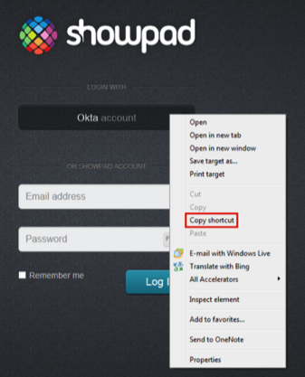
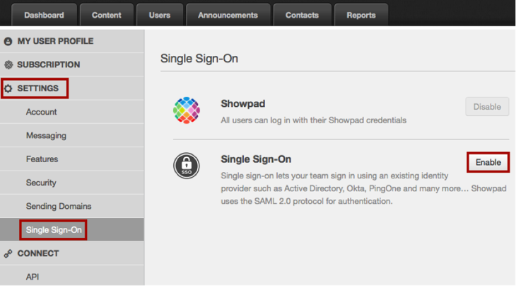
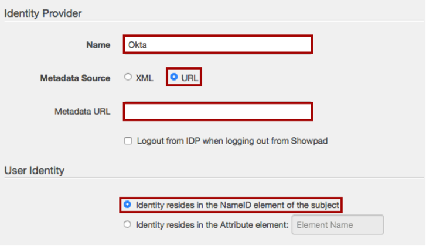
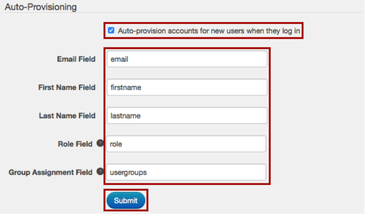
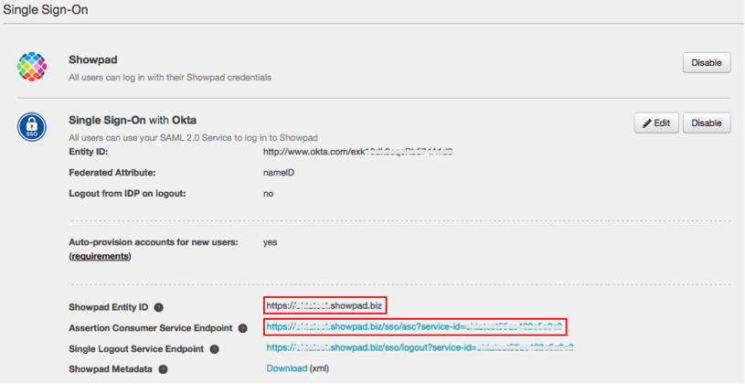
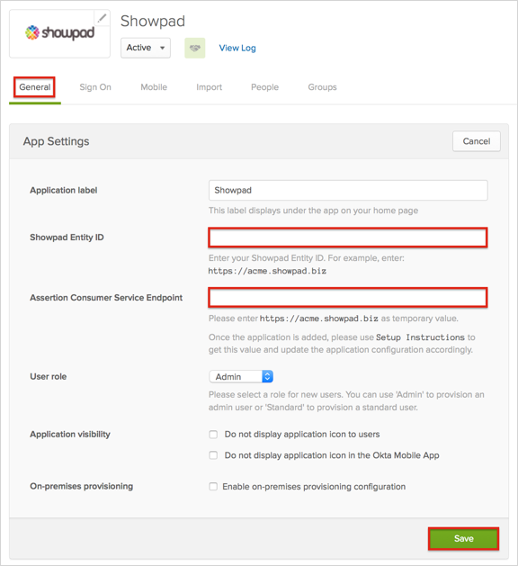
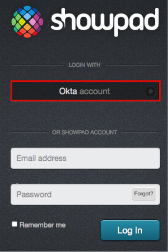

Showpad supports SP-initiated SAML flows. We recommend that you hide the Showpad app and set up a Bookmark app with the Showpad logo after you complete this SAML setup. For instructions on setting up a Bookmark app and hiding the original app, see Simulating an IDP-initiated Flow with the Bookmark App
Use the link for the Okta account button for the Bookmark App URL - see the instructions for SP-intiated flows at the end of this document. The URL should look something like this: https://[YourSubdomain].showpad.biz/sso/login?service-id=[yourServiceId]

Login to Showpad as an administrator, then navigate to SETTINGS > Single Sign-On, then click Enable:

Name: Okta
Metadata Source: Check the URL button.
Metadata URL: Copy and paste the following:
Sign in to the Okta Admin app to have this variable generated for you
User Identity: Check the Identity resides in the NameID element of the subject button.

In the Auto-Provisioning section, check Auto-provision accounts for new users when they log in for Just In Time (JIT) provisioning, then click Submit:

On the next page, make a copy of the values in the Showpad Entity ID and Assertion Consumer Service Endpoint fields:

In Okta, select the General tab for the Showpad app and enter the values you just saved into the corresponding fields, as shown below:

Click Save.
Done!
Notes:
SP-initiated flows and Just In Time (JIT) provisioning are supported.
IdP-initiated flows are not supported.
For SP-initiated flows:
Go to the https://[YourSubdomain].showpad.biz/login page, then click LOGIN WITH - Okta account button:
